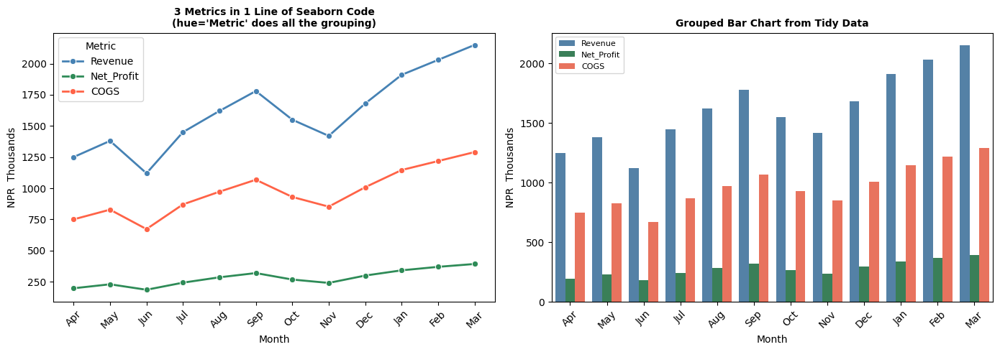
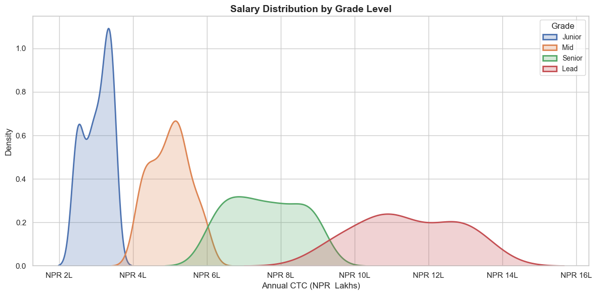
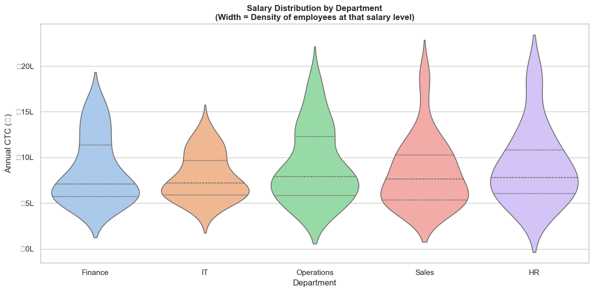
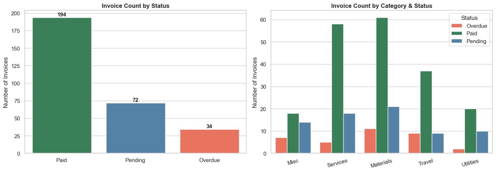
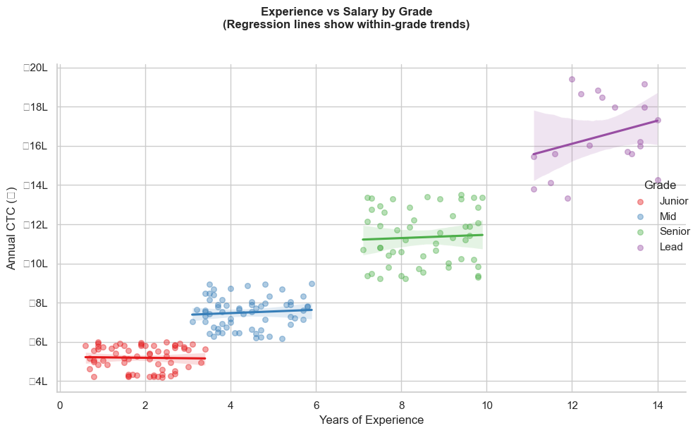

🎨 Seaborn for CA Professionals
Beautiful Statistical Charts with Minimal Code
Pre-requisite: Module 3 (Pandas), Module 4 (Matplotlib)
Estimated time: 2–3 hours
What is Seaborn?
Seaborn is built on top of Matplotlib and makes it dramatically easier to create statistical and analytical charts. Where Matplotlib is like building furniture from scratch, Seaborn is like buying flat-pack — assembled in far fewer steps, and it looks great by default.
| Task | Matplotlib | Seaborn |
|---|---|---|
| Box plot | ~15 lines | 1 line |
| Correlation heatmap | ~20 lines | 2 lines |
| Distribution with KDE | ~10 lines | 1 line |
| Regression plot | ~15 lines | 1 line |
| Pair plot | ~30 lines | 1 line |
Seaborn's strengths for financial analysis
- Distribution analysis — understanding how invoice amounts, salaries, or returns are spread
- Outlier detection — box plots to flag suspicious transactions
- Correlation analysis — which financial variables move together
- Category comparison — comparing metrics across business units
- Regression — understanding relationships between financial drivers
📋 Table of Contents
| # | Topic |
|---|---|
| 1 | Installing & Setup |
| 2 | Seaborn Themes |
| 3 | Distribution Plots — histplot & kdeplot |
| 4 | Box Plot — Outlier Detection |
| 5 | Violin Plot — Distribution by Category |
| 6 | Bar & Count Plots — Category Analysis |
| 7 | Heatmap — Correlation Matrix |
| 8 | Pair Plot — Multi-variable Exploration |
| 9 | Scatter with Regression — lineplot & regplot |
| 10 | FacetGrid — Charts by Category |
| 11 | Seaborn + Matplotlib Together |
| 12 | Practice Exercises |
Section 1: Installing & Setup
# Install if needed
# !pip install seaborn matplotlib pandas numpy
import seaborn as sns
import matplotlib.pyplot as plt
import pandas as pd
import numpy as np
%matplotlib inline
plt.rcParams['figure.dpi'] = 100
print('Seaborn version:', sns.__version__)
print('Ready!')
Seaborn version: 0.13.2
Ready!
# ==== Build a rich financial dataset for this notebook ====
np.random.seed(42)
n = 200 # 200 employee records
departments = np.random.choice(['Finance', 'Operations', 'Sales', 'HR', 'IT'], n,
p=[0.20, 0.25, 0.30, 0.10, 0.15])
grades = np.random.choice(['Junior', 'Mid', 'Senior', 'Lead'], n, p=[0.35, 0.30, 0.25, 0.10])
base_salary = {'Junior': 480000, 'Mid': 720000, 'Senior': 1080000, 'Lead': 1560000}
salaries = np.array([base_salary[g] * np.random.uniform(0.85, 1.25) for g in grades])
experience = np.array([{'Junior': 1.5, 'Mid': 4.0, 'Senior': 8.0, 'Lead': 12.0}[g] +
np.random.uniform(-1, 2) for g in grades]).clip(0, 20)
performance = np.clip(np.random.normal(3.2, 0.8, n), 1, 5).round(1)
bonus_pct = np.clip(performance * 2.5 + np.random.uniform(-2, 3, n), 5, 25).round(1)
bonus_amt = salaries * bonus_pct / 100
employees = pd.DataFrame({
'Department': departments,
'Grade': grades,
'Annual_CTC': salaries.round(0).astype(int),
'Experience': experience.round(1),
'Perf_Score': performance,
'Bonus_Pct': bonus_pct,
'Bonus_Amt': bonus_amt.round(0).astype(int),
})
# Invoice dataset
np.random.seed(7)
m = 300
invoice_df = pd.DataFrame({
'Amount': np.random.exponential(75000, m).clip(5000, 600000).round(-3).astype(int),
'Category': np.random.choice(['Materials', 'Services', 'Utilities', 'Travel', 'Misc'], m,
p=[0.30, 0.25, 0.15, 0.20, 0.10]),
'Month': np.random.choice(['Apr','May','Jun','Jul','Aug','Sep',
'Oct','Nov','Dec','Jan','Feb','Mar'], m),
'GST_Rate': np.random.choice([5, 12, 18, 28], m, p=[0.15, 0.25, 0.45, 0.15]),
'Status': np.random.choice(['Paid', 'Pending', 'Overdue'], m, p=[0.65, 0.25, 0.10]),
})
print(f'Employee dataset: {employees.shape[0]} records')
print(f'Invoice dataset: {invoice_df.shape[0]} records')
print()
print(employees.head())
Employee dataset: 200 records
Invoice dataset: 300 records
Department Grade Annual_CTC Experience Perf_Score Bonus_Pct \
0 Operations Mid 641700 3.5 2.6 9.2
1 IT Junior 581290 1.3 3.6 11.0
2 Sales Junior 505008 1.0 4.7 14.7
3 Sales Senior 1275030 7.3 4.3 10.5
4 Finance Mid 704174 3.4 4.5 13.1
Bonus_Amt
0 59036
1 63942
2 74236
3 133878
4 92247
Section 2: Seaborn Themes
Seaborn gives you ready-made, professional themes. Just one line changes the look of all your charts.
# Available themes: darkgrid, whitegrid, dark, white, ticks
# Available palettes: deep, muted, bright, pastel, dark, colorblind, Blues, rocket, etc.
themes = ['darkgrid', 'whitegrid', 'white', 'ticks']
fig, axes = plt.subplots(1, 4, figsize=(16, 4))
fig.suptitle('Seaborn Theme Comparison', fontsize=14, fontweight='bold')
sample_x = ['Q1', 'Q2', 'Q3', 'Q4']
sample_y = [3800, 4200, 4650, 6090]
for ax, theme in zip(axes, themes):
with sns.axes_style(theme):
ax.bar(sample_x, sample_y, color=sns.color_palette('Blues_d', 4))
ax.set_title(f"style='{theme}'", fontsize=10)
ax.set_ylabel('₹ Thousands')
plt.tight_layout()
plt.show()
# Set a default theme for the rest of this notebook
sns.set_theme(style='whitegrid', palette='deep')
print("Default theme set to 'whitegrid' with 'deep' palette")

Default theme set to 'whitegrid' with 'deep' palette
Section 3: Distribution Plots — histplot & kdeplot
Distribution plots answer: "How are my values spread?"
For CA professionals: "Are most invoices small, or are large invoices common?"
"Are salaries concentrated in one band or spread across many?"
# histplot — distribution of invoice amounts
fig, axes = plt.subplots(1, 2, figsize=(14, 5))
# Simple histogram
sns.histplot(data=invoice_df, x='Amount', bins=25, color='steelblue',
kde=True, ax=axes[0])
axes[0].set_title('Invoice Amount Distribution\n(Histogram + KDE)', fontsize=12, fontweight='bold')
axes[0].set_xlabel('Invoice Amount (₹)')
axes[0].xaxis.set_major_formatter(plt.FuncFormatter(lambda x, _: f'₹{x/1000:.0f}K'))
# Histogram by Category
sns.histplot(data=invoice_df, x='Amount', hue='Category', bins=20,
multiple='stack', ax=axes[1])
axes[1].set_title('Invoice Amount by Category\n(Stacked Histogram)', fontsize=12, fontweight='bold')
axes[1].set_xlabel('Invoice Amount (₹)')
axes[1].xaxis.set_major_formatter(plt.FuncFormatter(lambda x, _: f'₹{x/1000:.0f}K'))
plt.tight_layout()
plt.show()
/var/folders/kp/mytrwq8157q9s1tmw7r79fkm0000gn/T/ipykernel_34372/803326696.py:18: UserWarning: Glyph 8377 (\N{INDIAN RUPEE SIGN}) missing from font(s) Arial.
plt.tight_layout()
/Users/aayush/micromamba/envs/stats/lib/python3.10/site-packages/IPython/core/pylabtools.py:170: UserWarning: Glyph 8377 (\N{INDIAN RUPEE SIGN}) missing from font(s) Arial.
fig.canvas.print_figure(bytes_io, **kw)

# kdeplot — Salary distribution by Grade (smooth density curves)
fig, ax = plt.subplots(figsize=(12, 6))
for grade in ['Junior', 'Mid', 'Senior', 'Lead']:
subset = employees[employees['Grade'] == grade]['Annual_CTC']
sns.kdeplot(subset / 100000, label=grade, fill=True, alpha=0.25, linewidth=2, ax=ax)
ax.set_title('Salary Distribution by Grade Level', fontsize=14, fontweight='bold')
ax.set_xlabel('Annual CTC (₹ Lakhs)')
ax.set_ylabel('Density')
ax.legend(title='Grade', fontsize=10)
ax.xaxis.set_major_formatter(plt.FuncFormatter(lambda x, _: f'₹{x:.0f}L'))
plt.tight_layout()
plt.show()
print('Average CTC by Grade:')
print(employees.groupby('Grade')['Annual_CTC'].mean().sort_values().apply(lambda x: f'₹{x/100000:.1f} Lakhs'))
/var/folders/kp/mytrwq8157q9s1tmw7r79fkm0000gn/T/ipykernel_34372/2691951554.py:14: UserWarning: Glyph 8377 (\N{INDIAN RUPEE SIGN}) missing from font(s) Arial.
plt.tight_layout()
/Users/aayush/micromamba/envs/stats/lib/python3.10/site-packages/IPython/core/pylabtools.py:170: UserWarning: Glyph 8377 (\N{INDIAN RUPEE SIGN}) missing from font(s) Arial.
fig.canvas.print_figure(bytes_io, **kw)

Average CTC by Grade:
Grade
Junior ₹5.2 Lakhs
Mid ₹7.5 Lakhs
Senior ₹11.3 Lakhs
Lead ₹16.5 Lakhs
Name: Annual_CTC, dtype: object
Section 4: Box Plot — Outlier Detection
Box plots are one of the most important charts for auditors.
They show the spread of data and immediately highlight outliers — unusual values that may warrant investigation.
Reading a box plot:
Outlier ●
|
Whisker ───┤ Upper fence (Q3 + 1.5×IQR)
│
Q3 ┌────┤ 75th percentile
│ │
Median├────┤ 50th percentile (orange line)
│ │
Q1 └────┤ 25th percentile
│
Whisker ───┤ Lower fence (Q1 - 1.5×IQR)
|
Outlier ●
# Box plot — Invoice amounts by category (flags outliers automatically)
fig, axes = plt.subplots(1, 2, figsize=(14, 6))
# Invoice amounts by expense category
sns.boxplot(data=invoice_df, x='Category', y='Amount',
palette='Set2', ax=axes[0], width=0.5,
flierprops=dict(marker='o', color='red', markersize=6, alpha=0.6))
axes[0].set_title('Invoice Amounts by Category\n(Red dots = Outliers)', fontsize=12, fontweight='bold')
axes[0].set_ylabel('Invoice Amount (₹)')
axes[0].set_xlabel('')
axes[0].yaxis.set_major_formatter(plt.FuncFormatter(lambda y, _: f'₹{y/1000:.0f}K'))
axes[0].tick_params(axis='x', rotation=15)
# Employee salary by department
sns.boxplot(data=employees, x='Department', y='Annual_CTC',
palette='husl', ax=axes[1], width=0.5,
flierprops=dict(marker='D', color='red', markersize=5, alpha=0.7))
axes[1].set_title('Salary by Department\n(Diamond = Outliers)', fontsize=12, fontweight='bold')
axes[1].set_ylabel('Annual CTC (₹)')
axes[1].set_xlabel('')
axes[1].yaxis.set_major_formatter(plt.FuncFormatter(lambda y, _: f'₹{y/100000:.1f}L'))
axes[1].tick_params(axis='x', rotation=15)
plt.tight_layout()
plt.show()
/var/folders/kp/mytrwq8157q9s1tmw7r79fkm0000gn/T/ipykernel_34372/300025287.py:5: FutureWarning:
Passing `palette` without assigning `hue` is deprecated and will be removed in v0.14.0. Assign the `x` variable to `hue` and set `legend=False` for the same effect.
sns.boxplot(data=invoice_df, x='Category', y='Amount',
/var/folders/kp/mytrwq8157q9s1tmw7r79fkm0000gn/T/ipykernel_34372/300025287.py:15: FutureWarning:
Passing `palette` without assigning `hue` is deprecated and will be removed in v0.14.0. Assign the `x` variable to `hue` and set `legend=False` for the same effect.
sns.boxplot(data=employees, x='Department', y='Annual_CTC',
/var/folders/kp/mytrwq8157q9s1tmw7r79fkm0000gn/T/ipykernel_34372/300025287.py:24: UserWarning: Glyph 8377 (\N{INDIAN RUPEE SIGN}) missing from font(s) Arial.
plt.tight_layout()
/Users/aayush/micromamba/envs/stats/lib/python3.10/site-packages/IPython/core/pylabtools.py:170: UserWarning: Glyph 8377 (\N{INDIAN RUPEE SIGN}) missing from font(s) Arial.
fig.canvas.print_figure(bytes_io, **kw)

# Box plot with stripplot overlaid — shows individual data points
fig, ax = plt.subplots(figsize=(12, 6))
sns.boxplot(data=employees, x='Grade', y='Annual_CTC',
order=['Junior', 'Mid', 'Senior', 'Lead'],
palette=['#AED6F1','#85C1E9','#5DADE2','#2E86C1'],
width=0.45, ax=ax,
flierprops=dict(marker='', alpha=0))
sns.stripplot(data=employees, x='Grade', y='Annual_CTC',
order=['Junior', 'Mid', 'Senior', 'Lead'],
color='dimgray', alpha=0.4, size=4, jitter=True, ax=ax)
ax.set_title('Salary Distribution by Grade\n(Box + Individual Data Points)', fontsize=13, fontweight='bold')
ax.set_ylabel('Annual CTC (₹)')
ax.set_xlabel('Employee Grade')
ax.yaxis.set_major_formatter(plt.FuncFormatter(lambda y, _: f'₹{y/100000:.1f}L'))
plt.tight_layout()
plt.show()
/var/folders/kp/mytrwq8157q9s1tmw7r79fkm0000gn/T/ipykernel_34372/4043011023.py:4: FutureWarning:
Passing `palette` without assigning `hue` is deprecated and will be removed in v0.14.0. Assign the `x` variable to `hue` and set `legend=False` for the same effect.
sns.boxplot(data=employees, x='Grade', y='Annual_CTC',
/var/folders/kp/mytrwq8157q9s1tmw7r79fkm0000gn/T/ipykernel_34372/4043011023.py:19: UserWarning: Glyph 8377 (\N{INDIAN RUPEE SIGN}) missing from font(s) Arial.
plt.tight_layout()
/Users/aayush/micromamba/envs/stats/lib/python3.10/site-packages/IPython/core/pylabtools.py:170: UserWarning: Glyph 8377 (\N{INDIAN RUPEE SIGN}) missing from font(s) Arial.
fig.canvas.print_figure(bytes_io, **kw)

Section 5: Violin Plot — Distribution Shape by Category
A violin plot combines a box plot with a KDE — it shows both summary statistics AND the full distribution shape.
# Violin plot — salary distribution by department
fig, ax = plt.subplots(figsize=(12, 6))
sns.violinplot(data=employees, x='Department', y='Annual_CTC',
palette='pastel', inner='quartile', ax=ax,
order=['Finance', 'IT', 'Operations', 'Sales', 'HR'])
ax.set_title('Salary Distribution by Department\n(Width = Density of employees at that salary level)',
fontsize=12, fontweight='bold')
ax.set_ylabel('Annual CTC (₹)')
ax.set_xlabel('Department')
ax.yaxis.set_major_formatter(plt.FuncFormatter(lambda y, _: f'₹{y/100000:.0f}L'))
plt.tight_layout()
plt.show()
/var/folders/kp/mytrwq8157q9s1tmw7r79fkm0000gn/T/ipykernel_34372/568692105.py:4: FutureWarning:
Passing `palette` without assigning `hue` is deprecated and will be removed in v0.14.0. Assign the `x` variable to `hue` and set `legend=False` for the same effect.
sns.violinplot(data=employees, x='Department', y='Annual_CTC',
/var/folders/kp/mytrwq8157q9s1tmw7r79fkm0000gn/T/ipykernel_34372/568692105.py:14: UserWarning: Glyph 8377 (\N{INDIAN RUPEE SIGN}) missing from font(s) Arial.
plt.tight_layout()
/Users/aayush/micromamba/envs/stats/lib/python3.10/site-packages/IPython/core/pylabtools.py:170: UserWarning: Glyph 8377 (\N{INDIAN RUPEE SIGN}) missing from font(s) Arial.
fig.canvas.print_figure(bytes_io, **kw)

Section 6: Bar & Count Plots — Category Analysis
sns.barplot() automatically calculates and displays mean + confidence interval for each category — more insightful than plain bar charts.
# barplot — Average salary by Department (with confidence interval)
fig, axes = plt.subplots(1, 2, figsize=(14, 6))
# Average CTC by department
dept_order = employees.groupby('Department')['Annual_CTC'].mean().sort_values(ascending=False).index
sns.barplot(data=employees, x='Department', y='Annual_CTC',
order=dept_order, palette='Blues_d',
estimator='mean', errorbar='ci', ax=axes[0])
axes[0].set_title('Average Salary by Department\n(Error bars = 95% Confidence Interval)', fontsize=11, fontweight='bold')
axes[0].set_ylabel('Average Annual CTC (₹)')
axes[0].set_xlabel('')
axes[0].yaxis.set_major_formatter(plt.FuncFormatter(lambda y, _: f'₹{y/100000:.1f}L'))
# Average bonus by Grade
grade_order = ['Junior', 'Mid', 'Senior', 'Lead']
sns.barplot(data=employees, x='Grade', y='Bonus_Pct',
order=grade_order, palette='Oranges_d',
ax=axes[1], errorbar='sd')
axes[1].set_title('Average Bonus % by Grade\n(Error bars = Std Deviation)', fontsize=11, fontweight='bold')
axes[1].set_ylabel('Bonus (%)')
axes[1].set_xlabel('')
plt.tight_layout()
plt.show()
/var/folders/kp/mytrwq8157q9s1tmw7r79fkm0000gn/T/ipykernel_34372/182792073.py:6: FutureWarning:
Passing `palette` without assigning `hue` is deprecated and will be removed in v0.14.0. Assign the `x` variable to `hue` and set `legend=False` for the same effect.
sns.barplot(data=employees, x='Department', y='Annual_CTC',
/var/folders/kp/mytrwq8157q9s1tmw7r79fkm0000gn/T/ipykernel_34372/182792073.py:16: FutureWarning:
Passing `palette` without assigning `hue` is deprecated and will be removed in v0.14.0. Assign the `x` variable to `hue` and set `legend=False` for the same effect.
sns.barplot(data=employees, x='Grade', y='Bonus_Pct',
/var/folders/kp/mytrwq8157q9s1tmw7r79fkm0000gn/T/ipykernel_34372/182792073.py:23: UserWarning: Glyph 8377 (\N{INDIAN RUPEE SIGN}) missing from font(s) Arial.
plt.tight_layout()
/Users/aayush/micromamba/envs/stats/lib/python3.10/site-packages/IPython/core/pylabtools.py:170: UserWarning: Glyph 8377 (\N{INDIAN RUPEE SIGN}) missing from font(s) Arial.
fig.canvas.print_figure(bytes_io, **kw)

# countplot — how many invoices by status and category?
fig, axes = plt.subplots(1, 2, figsize=(14, 5))
# Count of invoices by status
sns.countplot(data=invoice_df, x='Status',
palette={'Paid': 'seagreen', 'Pending': 'steelblue', 'Overdue': 'tomato'},
order=['Paid', 'Pending', 'Overdue'], ax=axes[0])
axes[0].set_title('Invoice Count by Status', fontsize=12, fontweight='bold')
axes[0].set_ylabel('Number of Invoices')
axes[0].set_xlabel('')
for p in axes[0].patches:
axes[0].annotate(f'{int(p.get_height())}', (p.get_x() + p.get_width()/2, p.get_height() + 2),
ha='center', fontsize=11, fontweight='bold')
# Count by category and status (hue)
sns.countplot(data=invoice_df, x='Category', hue='Status',
palette={'Paid': 'seagreen', 'Pending': 'steelblue', 'Overdue': 'tomato'},
ax=axes[1])
axes[1].set_title('Invoice Count by Category & Status', fontsize=12, fontweight='bold')
axes[1].set_ylabel('Number of Invoices')
axes[1].set_xlabel('')
axes[1].legend(title='Status')
axes[1].tick_params(axis='x', rotation=15)
plt.tight_layout()
plt.show()
/var/folders/kp/mytrwq8157q9s1tmw7r79fkm0000gn/T/ipykernel_34372/4118093210.py:5: FutureWarning:
Passing `palette` without assigning `hue` is deprecated and will be removed in v0.14.0. Assign the `x` variable to `hue` and set `legend=False` for the same effect.
sns.countplot(data=invoice_df, x='Status',

Section 7: Heatmap — Correlation Matrix
A correlation heatmap shows how strongly pairs of variables are related.
In finance: "Does revenue growth correlate with headcount?" "Are salaries correlated with performance?"
Correlation values:
- +1.0 = Perfect positive relationship (as one rises, the other rises)
- 0.0 = No relationship
- -1.0 = Perfect negative relationship (as one rises, the other falls)
# Correlation heatmap for employee data
numeric_cols = employees[['Annual_CTC', 'Experience', 'Perf_Score', 'Bonus_Pct', 'Bonus_Amt']]
corr_matrix = numeric_cols.corr().round(2)
fig, ax = plt.subplots(figsize=(9, 7))
sns.heatmap(
corr_matrix,
annot=True, # Show correlation values in each cell
fmt='.2f', # 2 decimal places
cmap='RdYlGn', # Red (negative) → Yellow (zero) → Green (positive)
center=0, # Centre the colour scale at 0
square=True,
linewidths=1,
linecolor='white',
ax=ax,
cbar_kws={'label': 'Correlation Coefficient'}
)
ax.set_title('Correlation Matrix — Employee Metrics', fontsize=14, fontweight='bold', pad=15)
ax.set_xticklabels(ax.get_xticklabels(), rotation=30, ha='right')
plt.tight_layout()
plt.show()
# Key insights
print('Key Insights from Correlation Matrix:')
r_exp = corr_matrix.loc['Annual_CTC', 'Experience']
r_perf = corr_matrix.loc['Annual_CTC', 'Perf_Score']
r_bns = corr_matrix.loc['Bonus_Pct', 'Perf_Score']
lbl_exp = 'Strong +ve' if abs(r_exp) > 0.5 else 'Moderate'
lbl_perf = 'Strong +ve' if abs(r_perf) > 0.5 else 'Moderate'
print(f' CTC vs Experience: {r_exp} — {lbl_exp}')
print(f' Bonus% vs Perf: {corr_matrix.loc["Bonus_Pct","Perf_Score"]} — Performance drives bonus')

Key Insights from Correlation Matrix:
CTC vs Experience: 0.93 — Strong +ve
Bonus% vs Perf: 0.79 — Performance drives bonus
# Monthly revenue heatmap — very common in business analysis
# Simulate 3 years of monthly revenue data
np.random.seed(5)
years = [2023, 2024, 2025]
months_list = ['Apr', 'May', 'Jun', 'Jul', 'Aug', 'Sep', 'Oct', 'Nov', 'Dec', 'Jan', 'Feb', 'Mar']
base = 1200
trend = 80 # ~80K growth per month over years
monthly_rev = {
2023: [1050, 1100, 900, 1150, 1280, 1400, 1220, 1120, 1380, 1580, 1720, 1850],
2024: [1250, 1380, 1120, 1450, 1620, 1780, 1550, 1420, 1680, 1910, 2030, 2150],
2025: [1480, 1590, 1350, 1700, 1850, 1980, 1820, 1700, 1950, 2200, 2350, 2480],
}
rev_df = pd.DataFrame(monthly_rev, index=months_list)
fig, ax = plt.subplots(figsize=(10, 7))
sns.heatmap(rev_df, annot=True, fmt=',.0f', cmap='YlOrRd',
linewidths=0.5, linecolor='white', ax=ax,
cbar_kws={'label': '₹ Thousands'})
ax.set_title('Monthly Revenue Heatmap — 3 Year Trend\n(₹ Thousands)', fontsize=13, fontweight='bold')
ax.set_xlabel('Financial Year')
ax.set_ylabel('Month (Apr = FY Start)')
plt.tight_layout()
plt.show()
/Users/aayush/micromamba/envs/stats/lib/python3.10/site-packages/seaborn/utils.py:61: UserWarning: Glyph 8377 (\N{INDIAN RUPEE SIGN}) missing from font(s) Arial.
fig.canvas.draw()
/var/folders/kp/mytrwq8157q9s1tmw7r79fkm0000gn/T/ipykernel_34372/135067131.py:27: UserWarning: Glyph 8377 (\N{INDIAN RUPEE SIGN}) missing from font(s) Arial.
plt.tight_layout()
/Users/aayush/micromamba/envs/stats/lib/python3.10/site-packages/IPython/core/pylabtools.py:170: UserWarning: Glyph 8377 (\N{INDIAN RUPEE SIGN}) missing from font(s) Arial.
fig.canvas.print_figure(bytes_io, **kw)

Section 8: Pair Plot — Multi-variable Exploration
sns.pairplot() creates a grid of scatter plots for all pairs of numeric variables — ideal for initial data exploration. One line of code replaces many separate charts.
# Pair plot — all relationships in employee data at once
# Color-coded by Grade
pair_data = employees[['Annual_CTC', 'Experience', 'Perf_Score', 'Bonus_Pct', 'Grade']]
g = sns.pairplot(
pair_data,
hue='Grade',
hue_order=['Junior', 'Mid', 'Senior', 'Lead'],
palette='Set1',
diag_kind='kde', # Diagonal = KDE distribution
plot_kws={'alpha': 0.5, 's': 30},
corner=True # Only lower triangle (avoids duplication)
)
g.fig.suptitle('Employee Metrics — Pair Plot by Grade', y=1.02, fontsize=13, fontweight='bold')
plt.show()

Section 9: Scatter with Regression — Relationships in Data
sns.regplot() and sns.lmplot() draw scatter plots with a regression line — shows the trend and whether two variables are truly related.
# regplot — does experience predict salary?
fig, axes = plt.subplots(1, 2, figsize=(14, 6))
# Plot 1: Experience vs CTC
sns.regplot(data=employees, x='Experience', y='Annual_CTC',
scatter_kws={'alpha': 0.4, 's': 30, 'color': 'steelblue'},
line_kws={'color': 'navy', 'linewidth': 2},
ax=axes[0])
axes[0].set_title('Experience vs Salary\n(Does experience predict CTC?)', fontsize=11, fontweight='bold')
axes[0].set_xlabel('Years of Experience')
axes[0].set_ylabel('Annual CTC (₹)')
axes[0].yaxis.set_major_formatter(plt.FuncFormatter(lambda y, _: f'₹{y/100000:.1f}L'))
corr_exp_ctc = employees[['Experience', 'Annual_CTC']].corr().iloc[0, 1]
axes[0].text(0.05, 0.92, f'Correlation: {corr_exp_ctc:.2f}', transform=axes[0].transAxes,
bbox=dict(boxstyle='round', facecolor='lightyellow'))
# Plot 2: Performance Score vs Bonus %
sns.regplot(data=employees, x='Perf_Score', y='Bonus_Pct',
scatter_kws={'alpha': 0.4, 's': 30, 'color': 'coral'},
line_kws={'color': 'darkred', 'linewidth': 2},
ax=axes[1])
axes[1].set_title('Performance Score vs Bonus %\n(Is bonus linked to performance?)', fontsize=11, fontweight='bold')
axes[1].set_xlabel('Performance Score (1–5)')
axes[1].set_ylabel('Bonus (%)')
corr_perf_bonus = employees[['Perf_Score', 'Bonus_Pct']].corr().iloc[0, 1]
axes[1].text(0.05, 0.92, f'Correlation: {corr_perf_bonus:.2f}', transform=axes[1].transAxes,
bbox=dict(boxstyle='round', facecolor='lightyellow'))
plt.tight_layout()
plt.show()
/var/folders/kp/mytrwq8157q9s1tmw7r79fkm0000gn/T/ipykernel_34372/1591439558.py:31: UserWarning: Glyph 8377 (\N{INDIAN RUPEE SIGN}) missing from font(s) Arial.
plt.tight_layout()
/Users/aayush/micromamba/envs/stats/lib/python3.10/site-packages/IPython/core/pylabtools.py:170: UserWarning: Glyph 8377 (\N{INDIAN RUPEE SIGN}) missing from font(s) Arial.
fig.canvas.print_figure(bytes_io, **kw)

# lmplot — regression by subgroup (Grade)
g = sns.lmplot(
data=employees,
x='Experience',
y='Annual_CTC',
hue='Grade',
hue_order=['Junior', 'Mid', 'Senior', 'Lead'],
palette='Set1',
scatter_kws={'alpha': 0.4, 's': 30},
height=6, aspect=1.5
)
g.set_axis_labels('Years of Experience', 'Annual CTC (₹)')
g.fig.suptitle('Experience vs Salary by Grade\n(Regression lines show within-grade trends)',
y=1.02, fontsize=12, fontweight='bold')
# Format y-axis
for ax in g.axes.flat:
ax.yaxis.set_major_formatter(plt.FuncFormatter(lambda y, _: f'₹{y/100000:.0f}L'))
plt.tight_layout()
plt.show()
/var/folders/kp/mytrwq8157q9s1tmw7r79fkm0000gn/T/ipykernel_34372/308541801.py:21: UserWarning: Glyph 8377 (\N{INDIAN RUPEE SIGN}) missing from font(s) Arial.
plt.tight_layout()
/Users/aayush/micromamba/envs/stats/lib/python3.10/site-packages/IPython/core/pylabtools.py:170: UserWarning: Glyph 8377 (\N{INDIAN RUPEE SIGN}) missing from font(s) Arial.
fig.canvas.print_figure(bytes_io, **kw)

Section 10: FacetGrid — Charts by Category
FacetGrid creates a grid of the same chart, split by a categorical variable. Like applying the same chart to each department, each quarter, etc.
# Invoice amount distribution — one histogram per expense category
g = sns.FacetGrid(
invoice_df,
col='Category',
col_wrap=3, # 3 charts per row
height=3.5,
aspect=1.2,
sharey=False # Allow different y-axis scales per chart
)
g.map(sns.histplot, 'Amount', bins=15, color='steelblue', kde=True)
for ax in g.axes.flat:
ax.xaxis.set_major_formatter(plt.FuncFormatter(lambda x, _: f'₹{x/1000:.0f}K'))
ax.tick_params(axis='x', rotation=30)
g.set_axis_labels('Invoice Amount', 'Count')
g.set_titles(col_template='{col_name}', fontweight='bold')
g.fig.suptitle('Invoice Amount Distribution by Expense Category', y=1.02, fontsize=13, fontweight='bold')
plt.tight_layout()
plt.show()
/var/folders/kp/mytrwq8157q9s1tmw7r79fkm0000gn/T/ipykernel_34372/1895315369.py:21: UserWarning: Glyph 8377 (\N{INDIAN RUPEE SIGN}) missing from font(s) Arial.
plt.tight_layout()
/Users/aayush/micromamba/envs/stats/lib/python3.10/site-packages/IPython/core/pylabtools.py:170: UserWarning: Glyph 8377 (\N{INDIAN RUPEE SIGN}) missing from font(s) Arial.
fig.canvas.print_figure(bytes_io, **kw)

Section 11: Seaborn + Matplotlib Together
Seaborn and Matplotlib work together seamlessly. Use Seaborn for the chart, Matplotlib for fine-tuning.
# Comprehensive HR Analytics Dashboard
fig = plt.figure(figsize=(16, 12))
fig.suptitle('HR Analytics Dashboard — FY 2024-25', fontsize=16, fontweight='bold', y=0.98)
# Layout using gridspec
gs = fig.add_gridspec(2, 3, hspace=0.4, wspace=0.35)
# Chart 1: Salary by Department (box plot)
ax1 = fig.add_subplot(gs[0, 0:2])
dept_order = employees.groupby('Department')['Annual_CTC'].median().sort_values(ascending=False).index
sns.boxplot(data=employees, x='Department', y='Annual_CTC',
order=dept_order, palette='Set2', ax=ax1, width=0.5)
ax1.set_title('Salary Distribution by Department', fontweight='bold')
ax1.set_ylabel('Annual CTC (₹)')
ax1.set_xlabel('')
ax1.yaxis.set_major_formatter(plt.FuncFormatter(lambda y, _: f'₹{y/100000:.0f}L'))
# Chart 2: Headcount by Grade (count plot)
ax2 = fig.add_subplot(gs[0, 2])
grade_counts = employees['Grade'].value_counts().reindex(['Junior','Mid','Senior','Lead'])
ax2.barh(grade_counts.index, grade_counts.values,
color=sns.color_palette('Blues_d', 4))
for i, v in enumerate(grade_counts.values):
ax2.text(v + 0.5, i, str(v), va='center', fontsize=10)
ax2.set_title('Headcount by Grade', fontweight='bold')
ax2.set_xlabel('Number of Employees')
# Chart 3: Performance distribution
ax3 = fig.add_subplot(gs[1, 0])
sns.histplot(data=employees, x='Perf_Score', bins=15, kde=True, color='coral', ax=ax3)
ax3.axvline(employees['Perf_Score'].mean(), color='navy', linestyle='--',
label=f"Mean: {employees['Perf_Score'].mean():.1f}")
ax3.set_title('Performance Score Distribution', fontweight='bold')
ax3.set_xlabel('Performance Score (1–5)')
ax3.legend()
# Chart 4: Bonus % vs Perf regression
ax4 = fig.add_subplot(gs[1, 1])
sns.regplot(data=employees, x='Perf_Score', y='Bonus_Pct',
scatter_kws={'alpha': 0.35, 's': 25, 'color': 'steelblue'},
line_kws={'color': 'navy'}, ax=ax4)
ax4.set_title('Performance vs Bonus %', fontweight='bold')
ax4.set_xlabel('Performance Score')
ax4.set_ylabel('Bonus (%)')
# Chart 5: Dept cost breakdown (stacked bar)
ax5 = fig.add_subplot(gs[1, 2])
dept_cost = employees.groupby('Department')[['Annual_CTC', 'Bonus_Amt']].sum() / 1e7 # In ₹ Crores
dept_cost.plot(kind='barh', stacked=True, ax=ax5,
color=['steelblue', 'coral'], width=0.6)
ax5.set_title('Total Cost by Department\n(₹ Crores)', fontweight='bold')
ax5.set_xlabel('₹ Crores')
ax5.set_ylabel('')
ax5.legend(['Base CTC', 'Bonus'], fontsize=8)
plt.show()
/var/folders/kp/mytrwq8157q9s1tmw7r79fkm0000gn/T/ipykernel_34372/787677977.py:11: FutureWarning:
Passing `palette` without assigning `hue` is deprecated and will be removed in v0.14.0. Assign the `x` variable to `hue` and set `legend=False` for the same effect.
sns.boxplot(data=employees, x='Department', y='Annual_CTC',
/Users/aayush/micromamba/envs/stats/lib/python3.10/site-packages/IPython/core/pylabtools.py:170: UserWarning: Glyph 8377 (\N{INDIAN RUPEE SIGN}) missing from font(s) Arial.
fig.canvas.print_figure(bytes_io, **kw)

Section 12: Practice Exercises
🏋️ Exercise 1 — Invoice Outlier Analysis
Using the invoice_df dataset:
1. Create a box plot showing invoice amounts for each GST rate (5%, 12%, 18%, 28%)
2. Identify and print the invoices that are statistical outliers (above Q3 + 1.5×IQR)
3. Create a heatmap showing average invoice amount by Category and Status
import seaborn as sns
import matplotlib.pyplot as plt
import pandas as pd
import numpy as np
# (Re-run the data setup cell at the top if invoice_df is not available)
# Write your analysis here
🏋️ Exercise 2 — Department-wise Financial Dashboard
Using the employees dataset, create a 2×2 subplot dashboard with:
1. Top-left: Violin plot of salary by department
2. Top-right: Bar plot of average performance score by department
3. Bottom-left: Scatter of Experience vs Bonus Amount, coloured by Department
4. Bottom-right: Heatmap of average salary by Department and Grade
Add appropriate titles and axis labels.
# Write your dashboard here
💡 Solutions
# SOLUTION — Exercise 1: Invoice Outlier Analysis
import seaborn as sns
import matplotlib.pyplot as plt
import pandas as pd
import numpy as np
# (Rebuild dataset if needed)
np.random.seed(7)
m = 300
invoice_df = pd.DataFrame({
'Amount': np.random.exponential(75000, m).clip(5000, 600000).round(-3).astype(int),
'Category': np.random.choice(['Materials','Services','Utilities','Travel','Misc'], m, p=[0.30,0.25,0.15,0.20,0.10]),
'GST_Rate': np.random.choice([5, 12, 18, 28], m, p=[0.15, 0.25, 0.45, 0.15]),
'Status': np.random.choice(['Paid','Pending','Overdue'], m, p=[0.65, 0.25, 0.10]),
})
fig, axes = plt.subplots(1, 2, figsize=(15, 6))
# Box plot by GST rate
sns.boxplot(data=invoice_df, x='GST_Rate', y='Amount', palette='coolwarm', ax=axes[0],
flierprops=dict(marker='o', color='red', markersize=5, alpha=0.7))
axes[0].set_title('Invoice Amounts by GST Rate Slab\n(Red = Outliers)', fontweight='bold')
axes[0].set_xlabel('GST Rate (%)')
axes[0].set_ylabel('Invoice Amount (₹)')
axes[0].yaxis.set_major_formatter(plt.FuncFormatter(lambda y, _: f'₹{y/1000:.0f}K'))
# Heatmap: Avg Amount by Category & Status
pivot = invoice_df.pivot_table(values='Amount', index='Category', columns='Status', aggfunc='mean').round(0)
sns.heatmap(pivot, annot=True, fmt=',.0f', cmap='Blues', linewidths=0.5, ax=axes[1],
cbar_kws={'label': 'Avg Invoice Amount (₹)'})
axes[1].set_title('Avg Invoice Amount\nby Category & Status', fontweight='bold')
plt.tight_layout()
plt.show()
# Identify outliers
Q1, Q3 = invoice_df['Amount'].quantile([0.25, 0.75])
IQR = Q3 - Q1
upper = Q3 + 1.5 * IQR
outliers = invoice_df[invoice_df['Amount'] > upper]
print(f'Outlier threshold: ₹{upper:,.0f}')
print(f'Outlier count: {len(outliers)} ({len(outliers)/len(invoice_df)*100:.1f}% of invoices)')
print(f'Total outlier value: ₹{outliers["Amount"].sum():,.0f}')
/var/folders/kp/mytrwq8157q9s1tmw7r79fkm0000gn/T/ipykernel_34372/2447621650.py:20: FutureWarning:
Passing `palette` without assigning `hue` is deprecated and will be removed in v0.14.0. Assign the `x` variable to `hue` and set `legend=False` for the same effect.
sns.boxplot(data=invoice_df, x='GST_Rate', y='Amount', palette='coolwarm', ax=axes[0],
/Users/aayush/micromamba/envs/stats/lib/python3.10/site-packages/seaborn/utils.py:61: UserWarning: Glyph 8377 (\N{INDIAN RUPEE SIGN}) missing from font(s) Arial.
fig.canvas.draw()
/Users/aayush/micromamba/envs/stats/lib/python3.10/site-packages/IPython/core/pylabtools.py:170: UserWarning: Glyph 8377 (\N{INDIAN RUPEE SIGN}) missing from font(s) Arial.
fig.canvas.print_figure(bytes_io, **kw)

Outlier threshold: ₹231,375
Outlier count: 11 (3.7% of invoices)
Total outlier value: ₹3,075,000
# SOLUTION — Exercise 2: Department-wise Dashboard
import seaborn as sns, matplotlib.pyplot as plt, pandas as pd, numpy as np
# Rebuild employees if needed (copy from data setup cell)
np.random.seed(42)
n = 200
departments = np.random.choice(['Finance','Operations','Sales','HR','IT'], n, p=[0.20,0.25,0.30,0.10,0.15])
grades = np.random.choice(['Junior','Mid','Senior','Lead'], n, p=[0.35,0.30,0.25,0.10])
base_salary = {'Junior':480000,'Mid':720000,'Senior':1080000,'Lead':1560000}
salaries = np.array([base_salary[g] * np.random.uniform(0.85, 1.25) for g in grades])
experience = np.array([{'Junior':1.5,'Mid':4.0,'Senior':8.0,'Lead':12.0}[g]+np.random.uniform(-1,2) for g in grades]).clip(0,20)
performance = np.clip(np.random.normal(3.2, 0.8, n), 1, 5).round(1)
bonus_pct = np.clip(performance*2.5+np.random.uniform(-2,3,n), 5, 25).round(1)
bonus_amt = salaries * bonus_pct / 100
employees = pd.DataFrame({'Department':departments,'Grade':grades,'Annual_CTC':salaries.round(0).astype(int),
'Experience':experience.round(1),'Perf_Score':performance,
'Bonus_Pct':bonus_pct,'Bonus_Amt':bonus_amt.round(0).astype(int)})
fig, axes = plt.subplots(2, 2, figsize=(16, 12))
fig.suptitle('HR Dashboard — Department-wise Analysis', fontsize=15, fontweight='bold')
# 1. Violin — salary by department
sns.violinplot(data=employees, x='Department', y='Annual_CTC', palette='pastel', ax=axes[0,0], inner='quartile')
axes[0,0].set_title('Salary Distribution by Department', fontweight='bold')
axes[0,0].set_ylabel('Annual CTC (₹)')
axes[0,0].set_xlabel('')
axes[0,0].yaxis.set_major_formatter(plt.FuncFormatter(lambda y,_: f'₹{y/100000:.0f}L'))
# 2. Bar — avg performance score by dept
dept_perf = employees.groupby('Department')['Perf_Score'].mean().sort_values(ascending=False)
axes[0,1].bar(dept_perf.index, dept_perf.values, color=sns.color_palette('Greens_d', len(dept_perf)))
axes[0,1].axhline(employees['Perf_Score'].mean(), color='red', linestyle='--', linewidth=1.5, label='Overall Avg')
axes[0,1].set_title('Avg Performance Score by Department', fontweight='bold')
axes[0,1].set_ylabel('Performance Score')
axes[0,1].set_ylim(0, 5)
axes[0,1].legend()
# 3. Scatter — Experience vs Bonus
for dept in employees['Department'].unique():
sub = employees[employees['Department'] == dept]
axes[1,0].scatter(sub['Experience'], sub['Bonus_Amt']/100000, label=dept, alpha=0.5, s=30)
axes[1,0].set_title('Experience vs Bonus Amount by Department', fontweight='bold')
axes[1,0].set_xlabel('Years of Experience')
axes[1,0].set_ylabel('Bonus Amount (₹ Lakhs)')
axes[1,0].legend(fontsize=8, markerscale=1.5)
# 4. Heatmap — avg salary by Dept × Grade
heat_data = employees.pivot_table(values='Annual_CTC', index='Department', columns='Grade',
columns_sort=False,
aggfunc='mean').reindex(columns=['Junior','Mid','Senior','Lead']) / 100000
sns.heatmap(heat_data.round(1), annot=True, fmt='.1f', cmap='YlOrRd', ax=axes[1,1],
cbar_kws={'label': 'Avg CTC (₹ Lakhs)'}, linewidths=0.5)
axes[1,1].set_title('Avg Salary (₹L) by Dept × Grade', fontweight='bold')
axes[1,1].set_ylabel('')
plt.tight_layout()
plt.show()
/var/folders/kp/mytrwq8157q9s1tmw7r79fkm0000gn/T/ipykernel_34372/1449637435.py:23: FutureWarning:
Passing `palette` without assigning `hue` is deprecated and will be removed in v0.14.0. Assign the `x` variable to `hue` and set `legend=False` for the same effect.
sns.violinplot(data=employees, x='Department', y='Annual_CTC', palette='pastel', ax=axes[0,0], inner='quartile')
---------------------------------------------------------------------------
TypeError Traceback (most recent call last)
Cell In[21], line 48
45 axes[1,0].legend(fontsize=8, markerscale=1.5)
47 # 4. Heatmap — avg salary by Dept × Grade
---> 48 heat_data = employees.pivot_table(values='Annual_CTC', index='Department', columns='Grade',
49 columns_sort=False,
50 aggfunc='mean').reindex(columns=['Junior','Mid','Senior','Lead']) / 100000
51 sns.heatmap(heat_data.round(1), annot=True, fmt='.1f', cmap='YlOrRd', ax=axes[1,1],
52 cbar_kws={'label': 'Avg CTC (₹ Lakhs)'}, linewidths=0.5)
53 axes[1,1].set_title('Avg Salary (₹L) by Dept × Grade', fontweight='bold')
TypeError: DataFrame.pivot_table() got an unexpected keyword argument 'columns_sort'
/Users/aayush/micromamba/envs/stats/lib/python3.10/site-packages/IPython/core/events.py:82: UserWarning: Glyph 8377 (\N{INDIAN RUPEE SIGN}) missing from font(s) Arial.
func(*args, **kwargs)
/Users/aayush/micromamba/envs/stats/lib/python3.10/site-packages/IPython/core/pylabtools.py:170: UserWarning: Glyph 8377 (\N{INDIAN RUPEE SIGN}) missing from font(s) Arial.
fig.canvas.print_figure(bytes_io, **kw)

🎉 Module 5 Complete — And That's the Full Series!
What you've learned in this module
| Chart | When to use |
|---|---|
histplot / kdeplot |
Distribution of invoices, salaries, returns |
boxplot |
Outlier detection, salary ranges, audit flags |
violinplot |
Distribution shape by category |
barplot |
Mean comparison with confidence intervals |
countplot |
Frequency analysis by category |
heatmap |
Correlation, monthly trends, segment × category analysis |
pairplot |
Multi-variable exploration in one chart |
regplot / lmplot |
Trend and regression by group |
FacetGrid |
Same chart repeated by category |
🏆 Full Course Summary
| Module | Library | Key Skills |
|---|---|---|
| 1 | Python | Variables, data types, loops, functions |
| 2 | NumPy | Arrays, vectorized math, NPV/IRR |
| 3 | Pandas | DataFrames, GroupBy, merge, Excel I/O |
| 4 | Matplotlib | Line, bar, pie, histogram, dashboard |
| 5 | Seaborn | Statistical charts, heatmaps, outlier detection |
What's Next?
- Real project: Apply these skills to your own firm's data
- openpyxl / xlsxwriter: Create formatted Excel reports from Python
- reportlab / fpdf: Generate professional PDF reports automatically
- scikit-learn: Machine learning for fraud detection and risk scoring
- Streamlit / Dash: Build interactive financial dashboards
"Data is the new audit trail. Python is the new working paper."
Python for CA Professionals — Module 5: Seaborn
End of Introductory Series